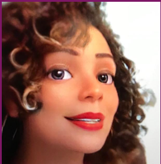

Mil de Paula

Movida pela paixão pelo processo de aprendizado e por desafios, encontro satisfação em cada nova descoberta. Minha afinidade com a tecnologia surgiu ao lecionar aulas de inglês para desenvolvedores, onde percebi que a programação é um campo fascinante e em constante evolução. A dinâmica envolvente da tecnologia me cativa constantemente. Nesse contexto, fundei a Techish Academy, uma instituição dedicada a ensinar inglês para aqueles que desejam ingressar ou já atuam na área tech